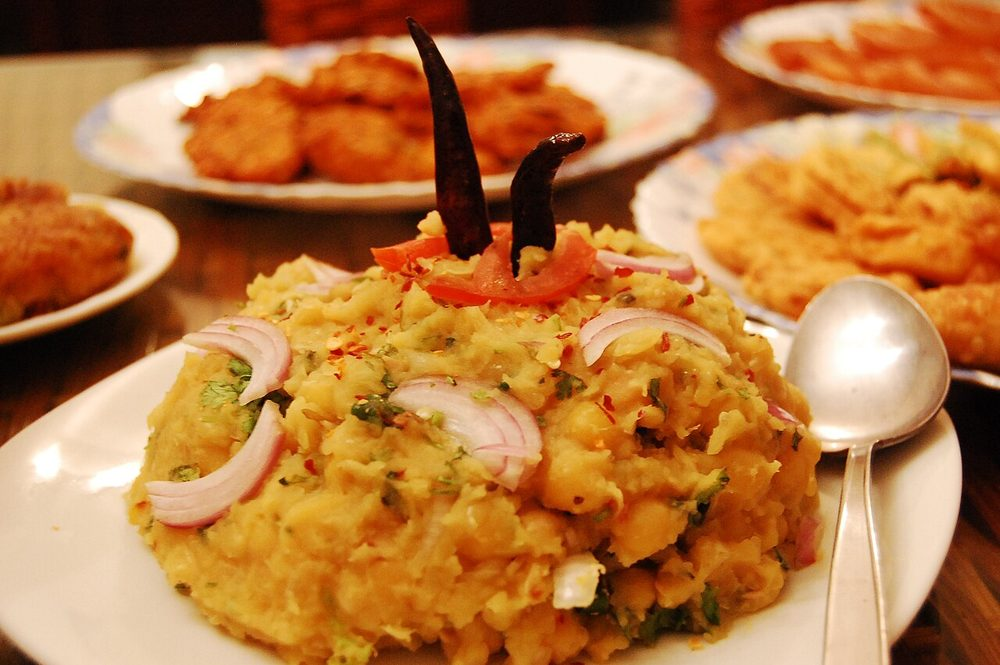

Ghugni
dried white peas stewed soft with mustard oil, ginger and cumin, finished with lemon and black salt

Allergens: none of the common ones
Ingredients
Quantities for 4.
- 250g white peas Dried Peas
- 1 medium, cut into 1cm dice Potato
- 2 medium, finely chopped Onion
- 6 cloves, crushed Garlic
- 1 tbsp, grated, plus 1 tbsp julienned to finish Ginger
- 2 medium, chopped Tomato
- 4 tbsp Mustard Oil
- 1 tsp Cumin Seeds
- 1 Bay Leafoptional
- 3/4 tsp Turmeric
- 1 tsp Chilli Powder
- 2 tsp Coriander Powder
- 1 tsp Cumin Powder
- 1/2 tsp Garam Masala
- 1/4 tsp, to finish Black Saltoptional
- 2, slit Green Chillioptional
- 1 Lemon
- 3 tbsp, chopped Coriander Leavesoptional
- to taste Salt
- 800ml Water
Cookware
pressure cooker, kadhai, stovetop
Before you start
- Soak the dried peas in plenty of cold water overnight, or at least 8 hours. Under-soaked peas stay chalky no matter how long you cook them.
- Heat the mustard oil to smoking and let it cool a little before you start cooking. Raw mustard oil is bitter.
- Chop the onion fine; it has to disappear into the gravy rather than sit in it.
Method
- Drain the soaked peas and pressure cook them with 600ml water, the turmeric and 1 tsp salt for 3 whistles, then 10 minutes on low. They should crush easily between finger and thumb but still hold their shape.Salt the peas at this stage. Added later it sits on the surface and never gets inside.
- Heat the mustard oil in a kadhai until it smokes faintly, then lower the heat and let it settle for 30 seconds.
- Crackle the cumin seeds and bay leaf for 20 seconds until the cumin darkens and smells toasted.
- Add the chopped onion and fry over medium heat for 10-12 minutes until deep golden brown at the edges.This browning is where ghugni gets its sweetness; pulling the onion out pale leaves the dish flat.
- Stir in the garlic and grated ginger and cook 90 seconds, until the raw smell goes.
- Add the tomato and cook 6-8 minutes, pressing it down, until it breaks up and the oil separates at the edges of the pan.
- Add the turmeric, chilli powder, coriander powder and cumin powder with a splash of water and fry 1 minute so the spices do not burn.
- Tip in the diced potato with 200ml water and cook covered 10 minutes, until the potato is just tender.
- Add the cooked peas with their liquid and the slit green chillies. Simmer uncovered 12-15 minutes, mashing a ladleful of peas against the side of the pan to thicken the gravy.Mashing part of the peas is what gives ghugni body. Do not add flour or let it stay watery.
- Stir in the garam masala, taste for salt, and finish off the heat with lemon juice, black salt, julienned ginger and coriander leaves.
Storage
Keeps 3 days refrigerated and thickens as it sits. Reheat with a splash of hot water and add fresh lemon and ginger at the table, since both fade overnight.
Nutrition Good estimate
| Per serving284 g | Per 100 g | |
|---|---|---|
| Calories | 455 kcal | 161 kcal |
| Protein | 18.2 g | 6 g |
| Carbohydrate | 60.6 g | 21 g |
| of which sugars | 7.8 g | 3 g |
| Fibre | 18.3 g | 6 g |
| Fat | 17.7 g | 6 g |
| of which saturated | 2.0 g | 1 g |
| of which unsaturated | 13.1 g | 5 g |
Worked out from the listed quantities; most of the ingredient list could be weighed. Some ingredients have no exact match in the nutrient database and use the nearest equivalent: black salt, garam masala. Estimated from raw ingredients using USDA FoodData Central. Cooking changes are not modelled, and added salt is excluded, so sodium is not given.
Recipe v1.0.0, last updated 2026-07-31. Curated for Khaana and kept under version control.